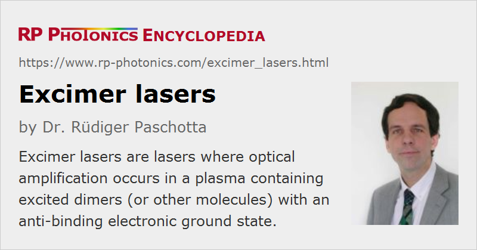

Excimer Lasers
Definition: lasers where optical amplification occurs in a plasma containing excited dimers (or other molecules) with an anti-binding electronic ground state
More general terms: ultraviolet lasers, lasers
German: Excimer-Laser
How to cite the article; suggest additional literature
Author: Dr. Rüdiger Paschotta
An excimer laser is a powerful kind of laser which is nearly always operated in the ultraviolet (UV) spectral region (→ ultraviolet lasers) and generates nanosecond pulses. The excimer gain medium is a gas mixture, typically containing a noble gas (rare gas) (e.g. argon, krypton, or xenon) and a halogen (e.g. fluorine or chlorine, e.g. as HCl), apart from helium and/or neon as buffer gas. An excimer gain medium is pumped with short (nanosecond) current pulses in a high-voltage electric discharge (or sometimes with an electron beam), which create so-called excimers (excited dimers) – molecules which represent a bound state of their constituents only in the excited electronic state, but not in the electronic ground state. (Strictly speaking, a dimer is a molecule consisting of two equal atoms, but the term excimer is normally understood to include asymmetric molecules such as XeCl as well. The term rare gas halide lasers would actually be more appropriate, and the term exciplex laser is sometimes used.) After stimulated or spontaneous emission, the excimer rapidly dissociates, so that reabsorption of the generated radiation is avoided. This makes it possible to achieve a fairly high gain even for a moderate concentration of excimers.
As excimer lasers use molecules as the gain medium, they can also be called molecular lasers.
Different types of excimer lasers typically emit at wavelengths between 157 and 351 nm:
| Excimer | Wavelength |
|---|---|
| F2 (fluorine) | 157 nm |
| ArF (argon fluoride) | 193 nm |
| KrF (krypton fluoride) | 248 nm |
| XeBr (xenon bromide) | 282 nm |
| XeCl (xenon chloride) | 308 nm |
| XeF (xenon fluoride) | 351 nm |
For various of those wavelengths, specialized excimer optics (ultraviolet optics) have been developed, which need to have a high optical quality and in particular a very high resistance to the intense ultraviolet light.
Typical excimer lasers emit pulses with a repetition rate up to a few kilohertz and average output powers between a few watts and hundreds of watts, which makes them the most powerful laser sources in the ultraviolet region, particularly for wavelengths below 300 nm. The wall-plug efficiency varies between 0.2% and 2%.
Device Lifetime
Early excimer lasers had limited lifetimes due to a variety of problems, arising e.g. from the corrosive nature of the gases used and from contamination of the gas with chemical byproducts and dust created by the electric discharge. Other challenges are the ablation of material from the electrodes and the high peak power of the required current pulses, which often allowed the thyratron switches to last only for a couple of weeks or months. However, a lot of engineering, involving e.g. the use of corrosion-resistant materials, advanced gas recirculating and purification systems, and solid-state high-voltage switches, has mitigated challenges of the excimer laser concept to a significant extent. The lifetime of modern excimer lasers is now limited by that of the ultraviolet optics, which have to withstand high fluxes of short-wavelength radiation, to something of the order of a few billion pulses.
Applications of Excimer Lasers
The short wavelengths in the ultraviolet spectral region make possible a number of applications:
- the generation of very fine patterns with photolithographic methods (microlithography), for example in semiconductor chip production
- material processing with laser ablation, exploiting the very short absorption lengths of the order of a few micrometers in many materials, so that a moderate pulse fluence of a few joules per square centimeter is sufficient for ablation
- pulsed laser deposition
- laser marking and microstructuring of glasses and plastics
- fabrication of fiber Bragg gratings
- ophthalmology (eye surgery), particularly for vision correction by corneal reshaping with ArF lasers at 193 nm; common methods are laser in-situ keratomileusis (LASIK) and photorefractive keratectomy (PRK)
- psoriasis treatment with XeCl lasers at 308 nm
- pumping other lasers, e.g. certain dye lasers
Photolithography in semiconductor device manufacturing is an application of major importance. Here, photoresists on processed semiconductor wafers are irradiated with high-power ultraviolet light through structured photomasks. High-power UV light, as can be generated with excimer lasers, is essential for obtaining short processing times and correspondingly high throughput, while the short wavelengths allow one to fabricate very fine structures (with optimized techniques even far below the optical wavelength). However, the latest developments in lithography require even shorter wavelengths in the extreme ultraviolet (EUV), e.g. at 13.5 nm, which can no longer be produced with excimer lasers. Certain laser-generated plasma sources are developed as the successors for excimer lasers in that area. Still, it is to be expected that excimer lasers will be used for fabricating many semiconductor chips for a long time to come, as only the most advanced computer chips require still finer structures than possible with such techniques.
Laser Safety
Note that excimer lasers raise a variety of safety issues, related to the use of high voltages, the handling of poisonous gases (halogens), and the risk of causing skin cancer and eye damage by irradiation with ultraviolet light.
Excimer Lamps
There are also excimer lamps which basically use the same kind of gas discharge with excimer generation as excimer lasers, but they do not contain a laser resonator and thus exploit only spontaneous emission. Some of them are operated in continuous-wave mode rather than with a pulsed discharge. They can be used as ultraviolet light sources, but with spatially diffuse emission instead of a well directed output beam.
Suppliers
The RP Photonics Buyer's Guide contains 13 suppliers for excimer lasers. Among them:
Questions and Comments from Users
Here you can submit questions and comments. As far as they get accepted by the author, they will appear above this paragraph together with the author’s answer. The author will decide on acceptance based on certain criteria. Essentially, the issue must be of sufficiently broad interest.
Please do not enter personal data here; we would otherwise delete it soon. (See also our privacy declaration.) If you wish to receive personal feedback or consultancy from the author, please contact him e.g. via e-mail.
By submitting the information, you give your consent to the potential publication of your inputs on our website according to our rules. (If you later retract your consent, we will delete those inputs.) As your inputs are first reviewed by the author, they may be published with some delay.
Bibliography
| [1] | F. G. Houtermans, “Über Massen-Wirkung im optischen Spektralgebiet und die Möglichkeit absolut negativer Absorption für einige Fälle von Molekülspektren (Licht-Lawine)”, Helv. Phys. Acta 33, 933 (1960) |
| [2] | I. S. Lakoba and S. I. Yakovlenko, “Active media of exciplex lasers (review)”, Sov. J. Quantum Electron. 10 (4), 389 (1980), doi:10.1070/QE1980v010n04ABEH010101 |
| [3] | J. J. Ewing, “Excimer laser technology development”, JSTQE 6 (6), 1061 (2000), doi:10.1109/2944.902155 |
| [4] | Ch. K. Rhodes (Editor), Excimer Lasers, 2nd edition, Springer, Berlin (1998) |
| [5] | D. Basting and G. Marowski (Editors), Excimer Laser Technology, Springer, Berlin (2004) |
See also: lasers, ultraviolet light, ultraviolet lasers, gas lasers, molecular lasers, excimer lamps
and other articles in the category lasers
|  |
If you like this page, please share the link with your friends and colleagues, e.g. via social media:
These sharing buttons are implemented in a privacy-friendly way!